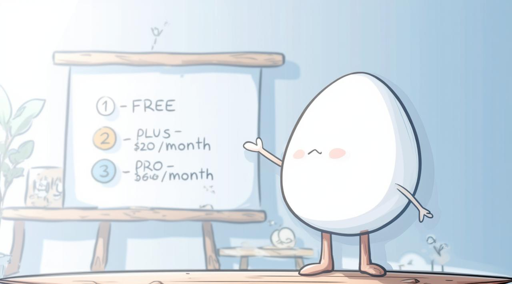
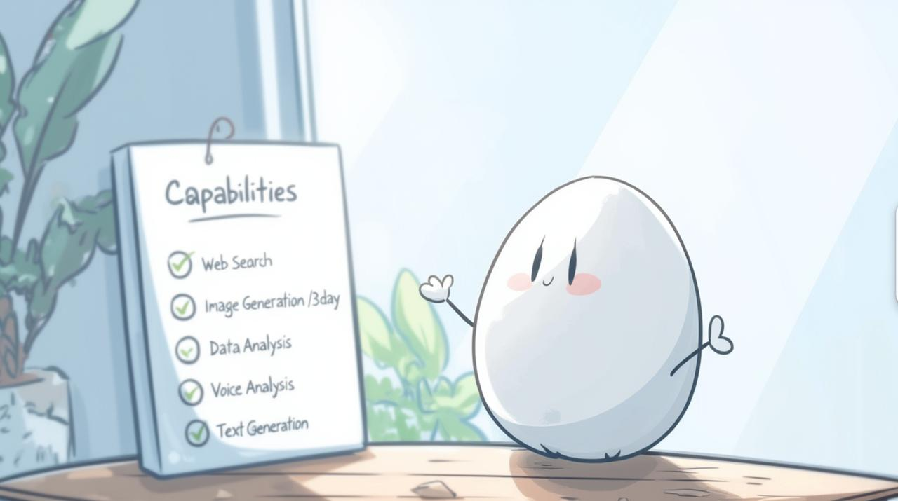
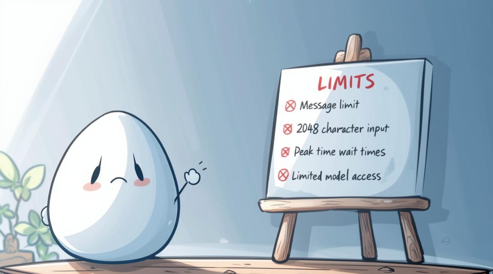
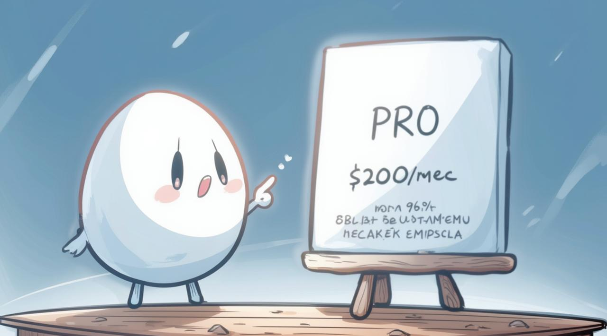
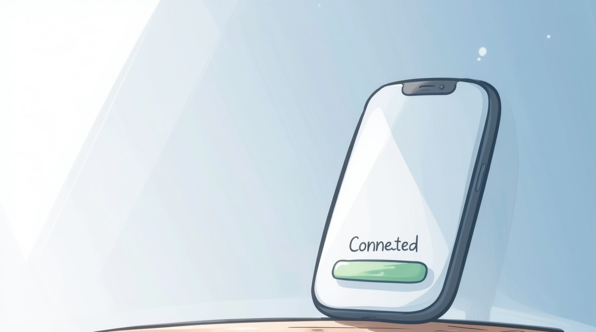
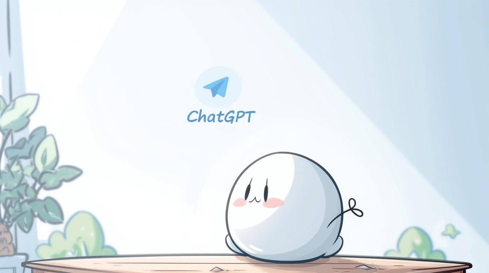
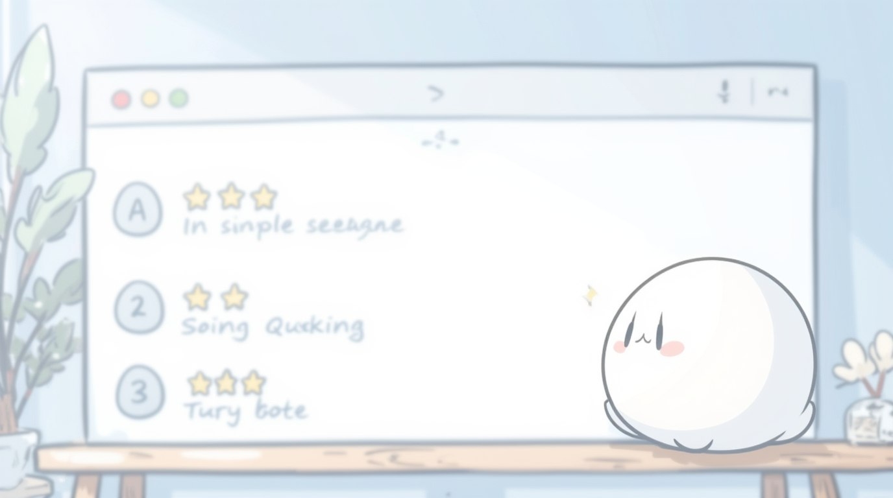
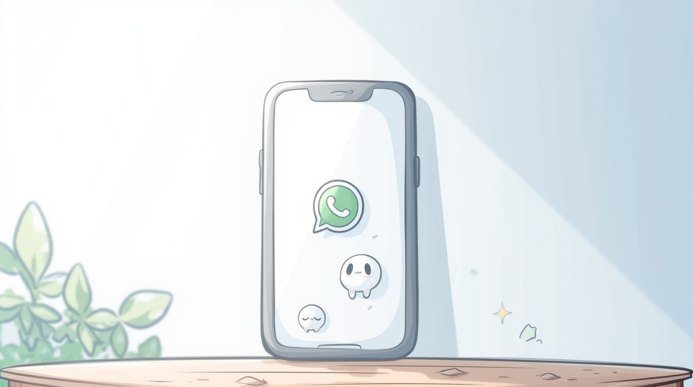
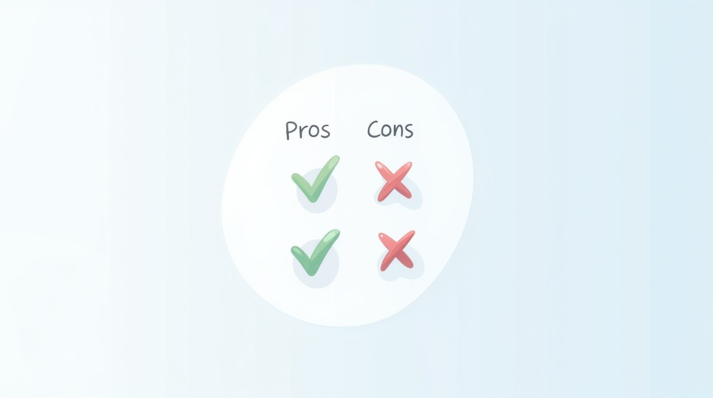

С этого экрана и далее в этом модуле вы увидите вторую кнопку с полным и подробным гайдом, чтобы можно было перейти к нему в любой момент.
☝️ СОВЕТ: сначала просмотрите этот модуль целиком для ознакомления, возможно, гайд вам и не понадобится
НАЧНЁМ СО СТОИМОСТИ
У ChatGPT ЕСТЬ 3 ТАРИФА:
1️⃣ Бесплатный
2️⃣ PLUS за $20 в месяц
3️⃣ PRO за $200 в месяц
На старте имеет смысл использовать бесплатную версию, чтобы разобраться и приноровиться. Тем более, что ее прям хорошо расширили функционалом 👍
БЕСПЛАТНЫЙ ТАРИФ
ВОЗМОЖНОСТИ:
✅ Распознавание изображений
✅ Поиск в интернете
✅ Генерация картинок (до 3 в день)
✅ Анализ данных
✅ Работа с голосом
✅ Генерация текстов
БЕСПЛАТНЫЙ ТАРИФ
❌ Лимит сообщений
- около 10 запросов за раз, после чего потребуется перерыв в несколько часов
❌ Ограничение на ввод
- не более 2048 символов в одном сообщении
❌ Очереди в пиковые часы
- в периоды высокой нагрузки возможны задержки
❌ Нельзя создавать GPTs
- это специализированные чат-боты внутри ChatGPT
- использовать готовые можно, создавать свои - нельзя
❌ Не все модели ChatGPT
- Для разных задач доступны разные модели ChatGPT, но для большинства задач 99% оптимально подходит модель GPT-4o, которая доступна в бесплатном тарифе
ТАРИФ PLUS за $20 в месяц
ДАННАЯ ПОДПИСКА ИМЕЕТ СМЫСЛ ДЛЯ ТЕХ, КТО:
👉 Хочет создавать собственные GPTs
👉 Создает десятки изображений ежедневно
👉 Работает с большими объемами данных
👉 Постоянно упирается в лимиты сообщений
👉 Хочет больше моделей для работы
ТАРИФ PRO за $200 в месяц
Данная подписка актуальна лишь на уровне космос и для задач национальных масштабов. Для 99.8% пользователей она бесполезна, поэтому в рамках этого курса мы ее даже расматривать не будем 😁💁♂️
КАК ПОЛУЧИТЬ ДОСТУП
Доступ к ChatGPT можно получить несколькими способами:
Веб-версия – chat.openai.com
Мобильное приложение (iOS и Android)
Чат-боты в Telegram и WhatsApp
Каждый способ имеет свои преимущества и недостатки, которые мы рассмотрим далее.
ВЕБ-ВЕРСИЯ ChatGPT
✔️ Работает прямо в браузере
✔️ Не требует установки дополнительных программ
✔️ Полный набор функций
✔️ Наш рекомендуемый вариант - один раз настроить и пользоваться
ИСПОЛЬЗОВАНИЕ VPN
Для обхода блокировки потребуется VPN. Доступные варианты:
🔹 Установить VPN из магазина приложений (любой надежный вариант)
🔹 Создать собственный VPN (занимает 10-15 минут)
🔹 Подробная инструкция по созданию VPN есть в гайде
CHATGPT НА СМАРТФОНЕ
Это альтернативный способ использования ChatGPT:
📌 Удобный доступ с мобильного устройства
📌 Возможность общения в любое время
📌 Официальные приложения для iOS и Android
Однако есть важный нюанс...
ПРИЛОЖЕНИЯ В РОССИИ НЕДОСТУПНЫ
Установка ChatGPT на телефон требует дополнительных действий.
Мы рекомендуем этим заниматься только после освоения базового функционала.
🔍 Подробная инструкция по установке доступна в гайде
CHATGPT В TELEGRAM
Самый простой способ доступа к ChatGPT в России - через Telegram-ботов:
🔍 Вы отправляете запрос боту
🔍 Бот передаёт его ChatGPT
🔍 Получает ответ и отправляет вам
У этого способа есть как преимущества, так и недостатки.
ПРЕИМУЩЕСТВА И НЕДОСТАТКИ TELEGRAM-БОТОВ
ПРЕИМУЩЕСТВА
✅ Не требует VPN
✅ Быстрый доступ через мессенджер
✅ Оплата в рублях с российских карт
НЕДОСТАТКИ
❌ Ограниченный функционал
❌ Качество ответов зависит от реализации бота
❌ Ваши данные проходят через посредника
КАК ВЫБРАТЬ TELEGRAM-БОТА?
При выборе Telegram-бота обратите внимание на:
🔍 Описание и условия использования
🔍 Отзывы других пользователей
🔍 Используемую версию ChatGPT
Мы рекомендуем SYNTX AI - это проверенное и надежное решение.
Перейти в SYNTX AICHATGPT В WHATSAPP
Это официальный способ доступа без VPN, в отличие от Telegram-ботов.
Недостатки:
- используется устаревшая модель
- ограниченный функционал
Подробная инструкция по подключению доступна в гайде.
МОДУЛЬ 1 ЗАВЕРШЁН

Поздравляем! Вы успешно завершили первый модуль, в котором разобрали все способы доступа к ChatGPT.
В следующем модуле «Основы ChatGPT» вы научитесь:
- эффективно формулировать запросы
- обходить ограничения системы
- получать максимально полезные ответы
Готовы продолжить?
ВАЖНОЕ ЗАКЛЮЧЕНИЕ
❗ ОБЯЗАТЕЛЬНО ПОЛУЧИТЕ ДОСТУП К ChatGPT
👉 Без этого дальнейшее изучение курса теряет смысл, так как вся практика строится на работе с ChatGPT
Выделите время и настройте доступ любым удобным способом из этого модуля. Уверены, что когда вы начнёте пользоваться ChatGPT, вы оцените все его возможности.